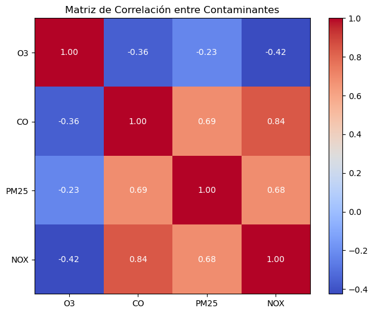
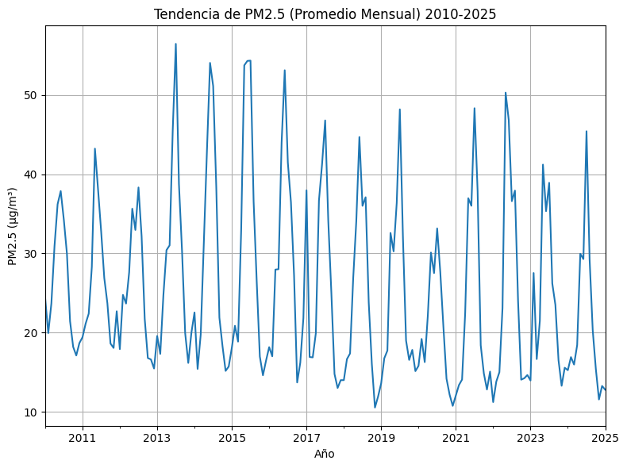
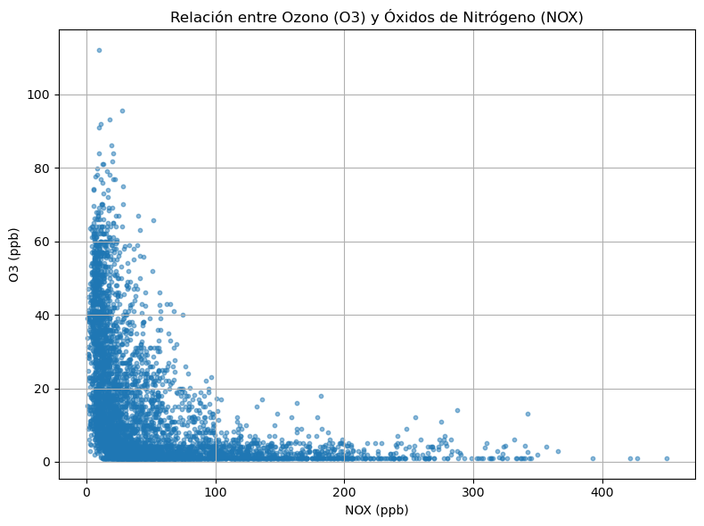
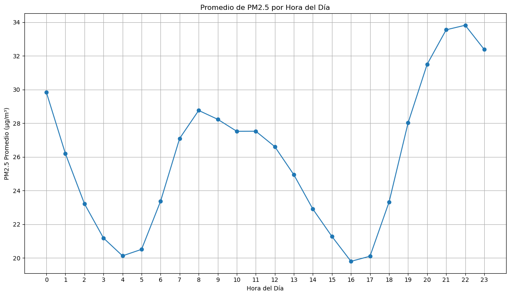
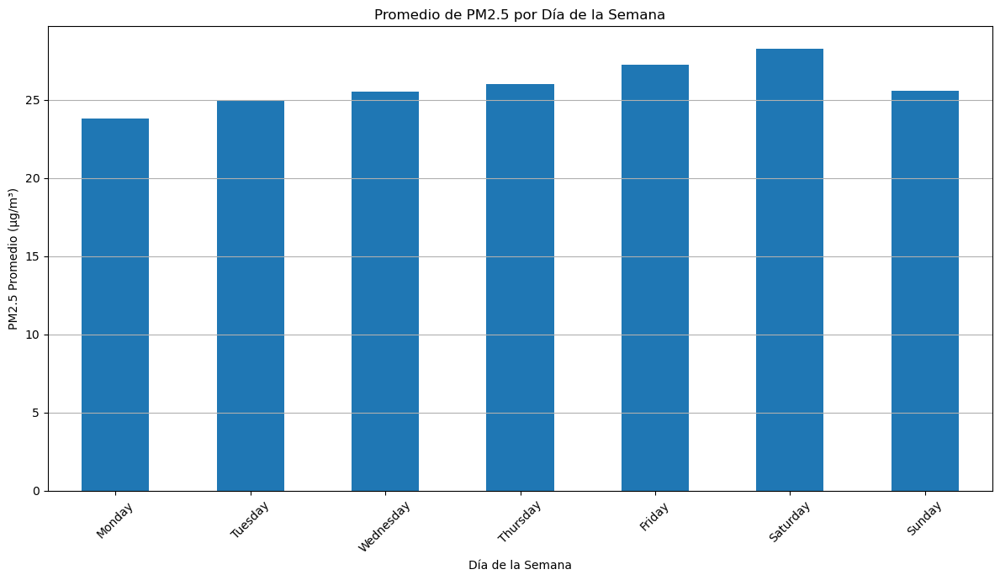
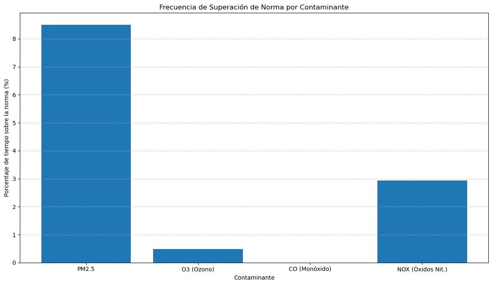

Analizamos contaminantes atmosféricos medidos por SINCA (estación La Florida) para identificar patrones temporales, relaciones entre variables y señales de mayor riesgo sanitario para la comunidad.
Respirar aire contaminado puede agravar enfermedades respiratorias y cardiovasculares. En Santiago, el tráfico, la geografía y las condiciones meteorológicas favorecen episodios de mala ventilación. Por eso analizamos datos abiertos del SINCA para entender qué contaminantes destacan en el sector sur-oriente y cuándo ocurre lo peor.
PM2,5
Principal foco de preocupación (picos en invierno / episodios críticos).
O₃ vs NOx
Relación que cambia según condiciones ambientales (patrones opuestos en periodos).
Hora / Día
La exposición varía por franja horaria y día de la semana.
Asegúrate de que los nombres de archivo coincidan con los .png dentro de docs/assets/.





